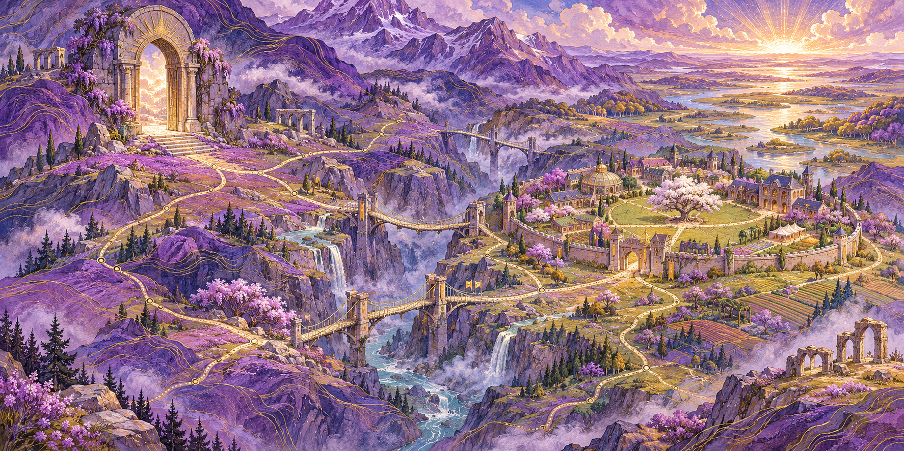

Aaron Alderman / An atlas of ideas
The world keeps opening.
Forty places. Three territories. More than one way through. Start with a question, follow a connection, and return with a different view.
An imagined geography for real questions. The landscape is an illustration; the routes organise themes, not physical locations or scientific equivalences.

Territory 01 / 16 places
The unseen
What would let you tell the difference?
From a hidden distinction to a record someone else can check.
- ObservationWhat did the measurement miss?
- The returnBack where you started. Something has changed.
- The instrumentThe change can be real. The detector can miss it.
- The borrowed rulerBefore you trust the reading, check the ruler.
- The replay roomCan someone else check the result?
- The Monster trailA matching number is only a clue.
- The gardenWhat can exist together?
- The far gatePossible. Permitted. Still out of reach.
- The echo chamberGone from the picture. Still in the motion.
- The erased distinctionA record can forget completely.
- The patterned wallGrow a pattern. Keep count.
- The repair benchCan a message survive a mistake?
- The working laboratoryHow could we tell the explanations apart?
- The control ledgerSlower can cost more.
- The unfinished observatoryA larger sky. An unfinished explanation.
- The changing scaleZoom out. What disappears?

Territory 02 / 10 places
The human
What have you stopped noticing?
Personal witness, unfamiliar reflections, and the work of making contact.
- Love, separation and trustI trusted the process.
- CareRemember to care.
- Contact & correctionBeautiful words. The wrong answer.
- The unasked questionWhat are they trying to do?
- The inconvenient truthTruth hurts. So can being wrong.
- The water’s edgeThe horse has a few questions.
- The living canopyThe same clearing. A different field of attention.
- The unfinished intentionAn intention is not yet an action.
- The house of stoneOne stone. Many histories.
- The surviving traceWhat survives is not everything that happened.

Territory 03 / 14 places
The boundary
What does responsible power make room for?
Agency, delegation, representations, and the freedom to revise.
- Power & agencyIf you could control everything, should you?
- The open handLeaving room is still a choice.
- Three doorsI can. May I? Should I?
- Machines & agencyMore help from machines. More say for people.
- The mapmaker’s debtEvery map leaves something out.
- The visible seamLet the correction leave a seam.
- The workshopCan you follow a change?
- The crossing of pathsWhat changes when time is short?
- The weight of a choiceWho decides what matters?
- The quiet horizonRoom for faith. Room for a question.
- The light beyondRestoration without erasure.
- The reading roomA reading is not yet a prediction.
- The unfinished commonsSomeone else can change the question.
- The retained refusalA failed attempt can still help.
Your route is your own
A map offers possibilities.
Some connections became useful. Some broke. Both remain part of this world. There is no required order, and no need to reach every place.
Explore the research reading paths ↗